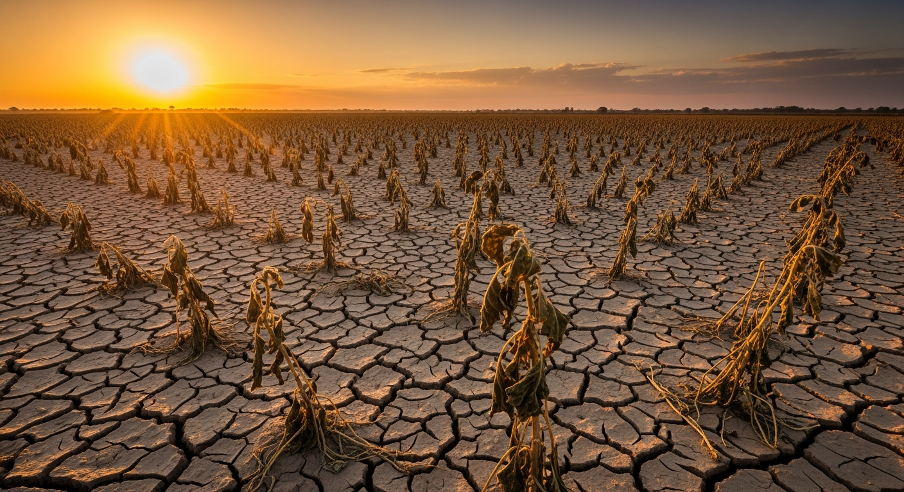

The data tells a story the industry can no longer ignore. Five interconnected crises are converging to create an unprecedented food security threat.
9.7B
people by 2050
50-80%
yield gap in emerging markets
1/3
of all food wasted
733M
people experiencing food insecurity today
Up to 80% yield gap
Despite decades of progress since the Green Revolution, agricultural productivity growth has slowed to 1.3% per year globally — far below what's needed. In sub-Saharan Africa and parts of South and Southeast Asia, farmers achieve only 20-50% of their potential yields.
This isn't a lack of effort; it's a lack of intelligence. Inputs — seed, fertilizer, water, pesticide — are applied at the wrong rates and at the wrong times. Without data, farmers make decisions based on tradition and instinct in a world that demands precision. The result: billions of dollars in lost yield and wasted inputs every single year.
70% of global freshwater consumed
Agriculture uses more freshwater than any other human activity. In a world of increasing droughts and water stress, irrigation practices that have served for centuries are now a liability. Simultaneously, indiscriminate fertilizer use creates toxic runoff, destroys biodiversity, and poisons waterways.
Agriculture contributes 10-12% of total global greenhouse gas emissions. One-third of the world's topsoil has been degraded. The sector is simultaneously depleting the very natural capital it depends on — and the tipping point is closer than most people realize.
Extreme disruption accelerating
The farming calendar that guided generations of farmers no longer holds. Unseasonal frosts arrive without warning. Droughts that once came every decade now come every three years. Flooding destroyed $15B+ of crops in Asia alone in 2024.
Warming temperatures are expanding the range of destructive pests and diseases into regions that have never experienced them. Without real-time climate intelligence, farmers are flying blind in increasingly dangerous skies.
57+ average farmer age in EU
The next generation isn't returning to the land. In Europe, the average farmer is over 57 years old. In developing markets, rural-to-urban migration is accelerating as younger people seek better economic opportunities.
Labour-intensive processes — planting, weeding, disease scouting, harvesting — face escalating shortages. Crops are left unharvested. Quality falls. Costs rise. Without automation powered by AI, these labour gaps will become production gaps.
33% of food produced is lost
Approximately one-third of all food produced globally is lost or wasted before it reaches a plate. In developing countries, post-harvest losses alone reach 20-40% of total production.
The causes: poor demand forecasting, inadequate storage, broken cold chains, and opaque logistics. Each lost unit of food represents not just economic waste, but wasted water, land, labour, and energy. Supply chains that cannot see what's coming cannot prepare for it.
Traditional agricultural extension services, while valuable, cannot scale to 570 million farms simultaneously. Spreadsheets cannot process satellite imagery. Human advisors cannot monitor a thousand sensors. The problems facing agriculture in 2026 require a fundamentally different class of solution — one built on AI, real-time data, and intelligent automation.
See how VitaSynora solves these challenges →